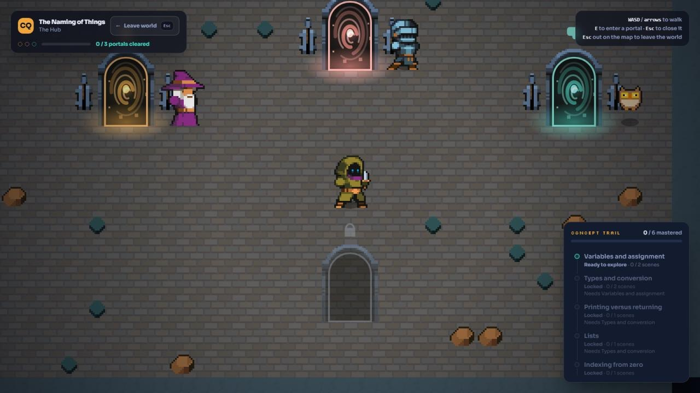
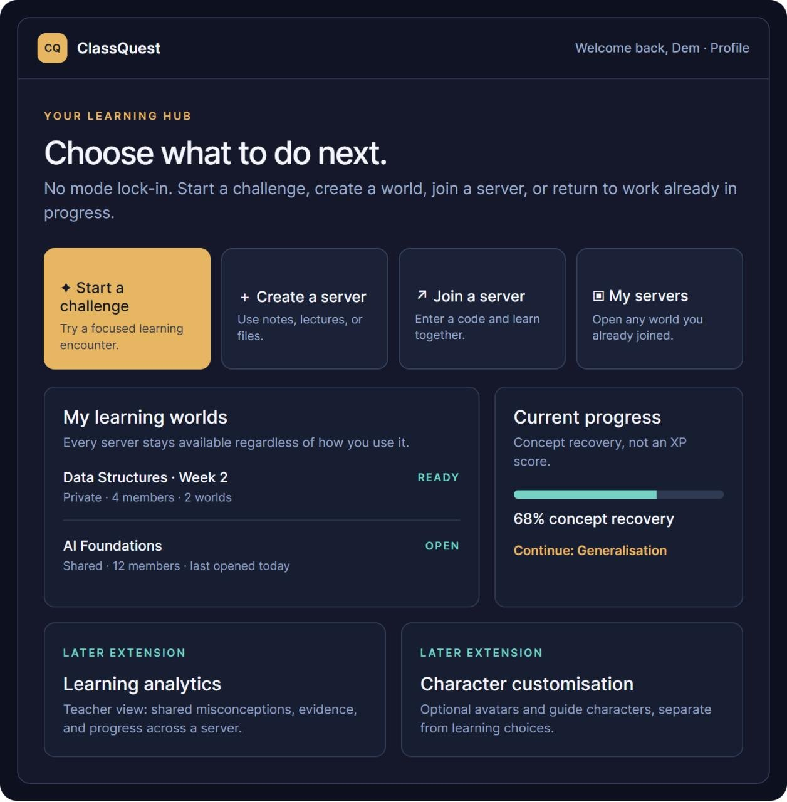
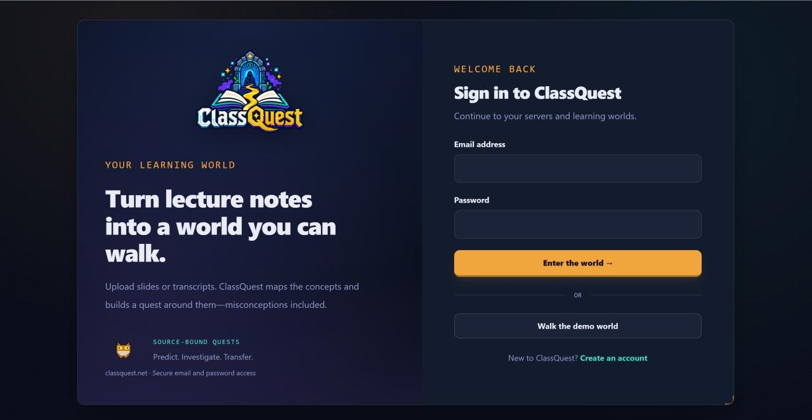

Barry Sampath / Work / ClassQuest
ClassQuest
A learning site that turns lecture material into playable quests, built over one weekend by a team of five. It won the People’s Choice Award.
The project and my contribution
ClassQuest takes course material and turns it into a sequence of playable challenges: predict, diagnose, check the source evidence, then transfer the idea or retry. Students join a cohort server, work through quests, and get readiness feedback based on how the group is answering.
Miguel Pineda led the technical build. I was one of the main contributors, working on the playable demo, frontend foundation, upload security and cohort features. I also presented during the judging Q&A. The award belongs to the whole team.
I was a Code Network Event Officer while competing in its hackathon. The executive cleared this before the event.
My work across ten merged pull requests
The playable learning loop
Built the prediction → diagnosis → source evidence → transfer-or-retry cycle, the answer choices and the concept trail. Added an overfitting fixture and updated the backend test expectations to match.
Frontend foundation and the visual system
Connected sign-in and registration to the existing API, restored sessions on return, and built the onboarding and server create/join flows with loading and error recovery. Applied the team’s visual system across those screens and the demo.
{kind=link}

{kind=link}

{kind=link}

Upload security and regression tests
The original handler used client-supplied filenames as storage paths and read uploads without a limit. That allowed path traversal or file overwrite, while a large request could exhaust memory or disk.
I replaced the supplied filenames with server-generated storage identifiers, bounded the read and added tests for traversal attempts, absolute paths and size limits. I also documented the security work that remained after the hackathon.
Cohort learning and preferences
I added an asynchronous practice challenge and readiness feedback based on shared answer patterns. Sparse and tied results fall back instead of producing confident feedback from weak evidence. Local learning preferences are validated and still work when storage is blocked.
Iteration and debugging
Revised the starting experience to remove forced learning modes, fixed a dependent hub card that broke after a failed typecheck, and added universal dashboard actions.
Three problems found during the build
- A failed typecheck left a broken card in the hub. An upstream change invalidated a dependent component, and we moved past the type error under time pressure. Testing exposed the broken card later.
- The first onboarding forced a learning mode on people. It tested fine with the team, who all knew what the modes meant, and confused everyone else. We removed the forced choice entirely.
- The upload handler was insecure in its first version. It accepted untrusted filenames and unbounded uploads. I corrected both and added regression tests.
What I would do earlier
- Start with safe upload defaults. Server-generated identifiers and bounded reads should have been in the first version rather than the patch.
- Test onboarding with someone outside the team on day one. Every usability problem we found late would have been found in ten minutes by one person who had not been in the planning conversation.
- Finish the security baseline earlier. Writing down what is unhardened is most useful while there is still time to harden some of it, not at the end as documentation.
Pull requests and repository
These pull requests document my contributions during the hackathon. The team continued refining the application afterwards.
- Playable learning demo, overfitting fixture, backend test updatesPR #5
- Frontend foundation, sign-in, sessions, onboarding, server flowsPR #11
- Upload security patch, traversal and size-limit tests, security baselinePR #12
- Visual system applied across screensPR #14
- Asynchronous cohort practice challengePR #20
- Readiness feedback with sparse-evidence safeguardsPR #21
- Validated learning preferences with storage fallbacksPR #23
- Role and learning-mode starting path, later revisedPR #24
- Forced learning modes and the obsolete dependent card removedPR #25
- Universal dashboard actionsPR #26
- All of my pull requests on the repositoryFiltered view
- Team repositoryMikePineda/class-quest